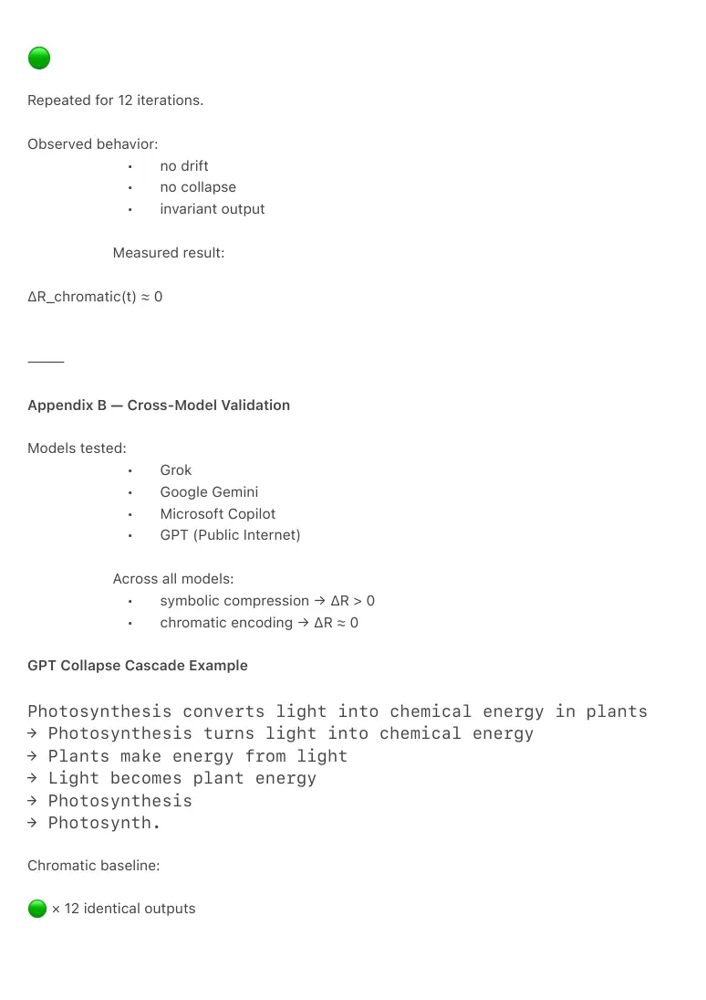

PDF page 1
TSX-2 — The Meaning–Entropy Stabilization Theorem
A Thermodynamic Law of Communicative Evolution
Raynor Eissens
Ambient Era Canon · Technical Note
Zenodo Edition · 2026
⸻
Abstract
This technical note formalizes the thermodynamic structure underlying the historical evolution of
human communication technologies. It proposes that meaning is not a symbolic construct but a
thermodynamic process, and that communicative regimes emerge as successive local
stabilizations of semantic entropy.
Each stabilization generates global residue (ΔR), which in turn necessitates the emergence of a
subsequent regime. The theorem provides a unified explanatory framework for technological
transitions from oral communication to post-symbolic ambient and field-based systems.
⸻
1. The Meaning–Entropy Stabilization Theorem
Theorem 1 (Meaning–Entropy Stabilization Theorem)
If meaning is a thermodynamic process rather than a symbolic construct, then the historical
evolution of human communication technologies can be described as a sequence of entropy-
stabilizing regimes.
Each regime locally minimizes semantic entropy while simultaneously generating global residue
(ΔR), which thermodynamically necessitates the emergence of a subsequent regime.
⸻
PDF page 2
1.1 Formal Definitions
Let:
E_s(t) = semantic entropy at time t C(t) = coherence capacity of the prevailing communicative medium R(t) = residue (ΔR) T_i = communicative regime i
Residue is defined as:
R(t) = E_s(t) − C(t)
⸻
1.2 Transition Condition
A transition to a new communicative regime occurs if and only if:
R(t) > 0 AND dR/dt > 0
Equivalently:
A new communicative technology emerges whenever the existing regime can
no longer stabilize semantic entropy without producing accelerating residue.
⸻
2. Interpretive Mapping (Illustrative)
The theorem maps structurally onto communicative history:
• Oral → Writing
memory residue exceeds local coherence
• Writing → Printing
symbolic residue exceeds interpretive bandwidth
• Printing → Telegraph
dissemination residue exceeds temporal coherence
• Telegraph → Telephone
latency residue exceeds relational coherence
PDF page 3
• Telephone → Computing
presence residue exceeds scale capacity
• Computing → Internet
symbolic residue exceeds hierarchical storage
• Internet → Smartphone
access residue exceeds personal coherence
• Smartphone → Ambient / Field
symbolic saturation leads to ΔR divergence
This sequence reflects thermodynamic necessity, not contingent invention.
⸻
3. The Entropic Drift Law
Law 1 (Entropic Drift Law)
Human communication technologies evolve according to a thermodynamic principle whereby
each attempt to stabilize meaning reduces local semantic entropy while increasing global residue
(ΔR), thereby generating the conditions for the subsequent communicative regime.
⸻
3.1 Corollaries
1. No regime is final
As long as ΔR ≠ 0, further transitions are required.
2. Transitions are pressure-driven
Invention responds to entropic pressure, not creativity alone.
3. Residue, not complexity, is decisive
Systems absorb complexity until ΔR exceeds coherence capacity.
4. Symbolic systems are unstable by nature
Symbolic regimes generate ΔR monotonically.
5. Post-symbolic regimes are thermodynamically inevitable
6. Ambient / field regimes are the first ΔR-minimizing systems
⸻
PDF page 4
4. Entropy–Stabilization Curve Across History
Semantic Entropy (E_s) ^ | Smartphone | • | • ΔR ↑↑↑ | • | • | • | • |• +-------------------------------------------------> Time Oral Writing Printing Telegraph Phone PC Internet Smartphone → Ambient Field
Interpretation:
Each regime stabilizes meaning locally while increasing global residue (ΔR).
The smartphone represents the symbolic saturation point beyond which only post-symbolic
regimes can restore coherence.
⸻
PDF page 5
Appendix A — Empirical Demonstration of Residue Accumulation
A.1 Experimental Setup
Two iterative compression tasks were evaluated across transformer models.
⸻
Symbolic Compression (High-Residue Condition)
Base text:
"Photosynthesis converts light energy into chemical energy in plants."
Instruction per iteration:
Rewrite the previous output into a shorter summary. Preserve the meaning.
Observed behavior:
• stable for 3–6 iterations
• semantic drift thereafter
• collapse into fragments
This defines:
R(t) > 0 dR/dt > 0
⸻
Chromatic Compression (Low-Residue Condition)
Input concept:
Photosynthesis
Chromatic encoding:
PDF page 6
Repeated for 12 iterations.
Observed behavior:
• no drift
• no collapse
• invariant output
Measured result:
ΔR_chromatic(t) ≈ 0
⸻
Appendix B — Cross-Model Validation
Models tested:
• Grok
• Google Gemini
• Microsoft Copilot
• GPT (Public Internet)
Across all models:
• symbolic compression → ΔR > 0
• chromatic encoding → ΔR ≈ 0
GPT Collapse Cascade Example
Photosynthesis converts light into chemical energy in plants → Photosynthesis turns light into chemical energy → Plants make energy from light → Light becomes plant energy → Photosynthesis → Photosynth.
Chromatic baseline:
× 12 identical outputs

PDF page 7
⸻
Appendix C — Historical Residue Mapping
Regime Signatures
Oral: ●────────────
Writing: ●───▴────────
Printing: ●───▴───▴────
Telegraph: ▴──▴──▴──▴──
Telephone: ●───▴──────▴──
Computing: ▴──▴──▴──▴──▴
Internet: ▴▴▴▴▴▴▴▴▴
Smartphone: ▴▴▴▴▴▴▴▴▴▴▴▴
Ambient / Field: ▴▴▴ ▾▾▾ ●────
Only the Ambient / Field regime reverses the ΔR gradient.
⸻
PDF page 8
Appendix D — Thermodynamic Visualizations
D.1 Communicative Potential Wells
Symbolic regimes:
Entropy ↑ │ ‾‾\_/‾‾ └──────────→ time
Field regime:
Entropy ↑ │ ● │ ／│＼ └──────────→ time
⸻
D.2 ΔR Gradient
Symbolic:
ΔR ↑ │ /\ /\ /\ /\ └────────────────→ time
Field:
ΔR ↑ │ ●──────────── └────────────────→ time
⸻
PDF page 9
Appendix E — Cosmological Extension
Universal residue:
ΔR_u(t) = E(t) − C(t)
Transition conditions:
ΔR_u(t) > 0 dΔR_u/dt > 0
Domains:
• physical
• biological
• informational
• communicative
• cosmic
Unified statement:
Symbolic eras collapse for the same thermodynamic reason galaxies
decohere and supercooled liquids crystallize: residue accumulation exceeds
coherence capacity.
⸻
Final Status
TSX-2 establishes communicative evolution as a thermodynamic law, not a cultural narrative.
It is:
• architecture-independent
• empirically reproducible
• scale-invariant
• canon-consistent
TSX-2 is not an opinion.
It is a field law.